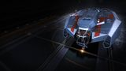

Ore hold (practical)
~64 t
The Type-6 Transporter is the most affordable medium hull you can turn into a working miner: a refinery, limpet controllers, ore racks and a small shield all fit, and it lands at most ring systems on a medium pad for under a million credits. But it has only two small hardpoints — no room for the full core-mining trio — and a small ore hold. It's a laser-mining starter that teaches the loop cheaply, not a hull you keep once the credits roll in.

This ship's 1–100 suitability rating reflects its fully-engineered fit for this role, scored against every ship in the role. See how ships are rated.
Mining is the trade where a cheap hull can still earn well, and the Type-6 is the cheapest medium ship that fits a real mining suite. Its eight optional internals take a refinery, a prospector controller, collector controllers, a detailed surface scanner and a couple of ore racks, while a class-3 shield slot keeps a small bubble of protection around you during the exposed minutes of working a rock. On a medium pad it reaches almost every ring system, and its good laden range gets you out to the pristine hotspots that pay.
The catch is its hardpoints: just two small mounts. That fits a mining laser and an abrasion blaster for surface and laser mining comfortably, but there is no room for the full seismic-charge-plus-sub-surface-missile-plus-abrasion-blaster trio that efficient core cracking wants. The ore hold is small too — a fraction of what a Type-8 or a capital miner carries. The Type-6's case is simple: get mining cheaply, learn the loop, and bank the profit toward a hull built for it.
Budget laser mining: a first dedicated miner, learning prospecting and refining, working accessible painite/platinum/tritium hotspots on a medium pad, and building capital toward a Type-8 or a capital miner.
Four things make the Type-6 a workable budget miner:
Two small hardpoints mean no full core-mining trio — this is a laser miner first. The ~64t practical ore hold is a fraction of a Type-8's, and a ~90 MJ base shield with no real guns means you run from pirates, you don't fight them. It earns honestly while you learn, but it's outclassed the moment you can afford a purpose-built miner.
A medium-pad, no-rank, sub-million-credit hull that fits a full laser-mining suite cheaply, but ~64t practical ore and only two small hardpoints cap it as a starter.
The 62/100 headline is a verdict against the mining role's priority-ordered factors. Each factor carries a weight (its share of 100); this hull earns part of each based on how it performs against the whole field. The points sum to the rating.
| Role factor | Score | Why this score |
|---|---|---|
| Effective ore capacity | 18/35 | ~110t max cargo and only ~64t practical ore once refinery and limpet controllers are fitted — functional but a fraction of the Type-8 (~406t), Cutter (~794t) or Type-9 (~790t); the budget floor among medium miners. |
| Tool & slot fit | 15/25 | Eight optional internals (5·5·4·4·3·2·2·1) seat a refinery, prospector/collector controllers, surface scanner and ore racks, but just 2 small hardpoints fit only a mining laser plus abrasion blaster — no room for the full seismic/sub-surface/abrasion core-cracking trio; 3 utility mounts. |
| Survivability | 7/15 | ~90 MJ base shield, ~300 MJ engineered with a 3C bi-weave and Heavy Duty booster, and no real weapons — you flee interdictions rather than fight; minimal self-defence on a lightly-built hull. |
| Pad class & access | 13/15 | Medium pad reaches almost every ring system and lands at outposts, with no rank or permit gate and good laden FSD range to pristine hotspots — only the small-pad hulls land in more places. |
| Cost & specialisation | 9/10 | ~867k Cr hull, ~6M Cr all-in engineered — cheaper than a bare Python — with no rank requirement; the cheapest functional way into a real mining suite, though entirely outclassed once purpose-built miners are affordable. |
| Weighted total | 62/100 | Matches the headline suitability rating for this ship in this role. |
Weights are an editorial decomposition of the role's stated priority order — not an in-game formula. Bar length shows how fully each factor is earned; the longest factors carried the score, the shortest are where it gave points away. See how ships are rated.
Both tables rate ships for mining specifically. The role column is the maximum cargo capacity in tonnes — though practical ore capacity is lower once the mining suite (refinery, limpet controllers) is fitted.
| Ship | Class | Max cargo (t) | Pros & cons vs Type-6 Transporter | Rating |
|---|---|---|---|---|
| Python | Medium | ~294 | All tool mounts; big hold; defends itselfFar pricier | 90 |
| Type-8 Transporter | Medium | ~406 | Far larger ore hold; tougherFar pricier | 84 |
| Krait Phantom | Medium | ~190 | More tool mounts; great range; bigger holdFar pricier | 70 |
| Keelback | Medium | ~98 | SLF for defence; similar budgetSmaller hold; fewer mounts | 68 |
| Type-6 Transporter this | Medium | ~110 | — this hull (baseline) | 62 |
Among medium miners the Type-6 is the budget floor. Everything above it carries more ore, mounts more tools, or defends itself — but all cost several times as much. The Keelback edges ahead on its fighter bay for defence; for the cheapest functional laser miner, the Type-6 is the entry point, then you graduate.
| Ship | Class | Max cargo (t) | Pros & cons vs Type-6 Transporter | Rating |
|---|---|---|---|---|
| Type-11 Prospector | Large | ~288 | Dedicated miner; exclusive Mk II mining modulesLarge pad; far pricier | 95 |
| Imperial Cutter | Large | ~794 | Vast ore hold; strong shields; fastLarge pad; Imperial rank; far pricier | 92 |
| Type-9 Heavy | Large | ~790 | Vast ore hold; cheap-ish per tonneLarge pad; flimsy; slow | 90 |
| Type-7 Transporter | Large | ~310 | Bigger hold; good rangeLarge pad; pricier | 78 |
| Cobra Mk III | Small | ~64 | Cheaper; lands anywhere; nimbleSmaller hold; fewer internals | 52 |
The dedicated and capital miners out-haul and out-specialise the Type-6 by a wide margin, but all need a large pad and far deeper pockets. The Type-6's only real rival below it is the small-pad Cobra Mk III — cheaper and lands anywhere, but smaller still. The Type-6 is rung one of the mining ladder: the cheapest medium miner, then you scale up.
At ~867k Cr the Type-6 is cheap, with no rank gate. A working mining fit — tools, refinery, prospector and collector controllers, ore racks and a small shield — brings the all-in figure to around 6M Cr, less than a bare Python hull.
That low cost is the whole point: mining profits in a Type-6 compound fast into a Type-8 or a capital miner. For maximum ore per trip or any real self-defence, a purpose-built miner wins easily; for getting into mining for almost nothing, nothing is cheaper.
Around 6M Cr all-in for a functional laser miner — the ship that teaches prospecting and refining and banks the credits toward a hull built for the job.
A complete laser-mining fit on a budget, with a small shield to survive a pirate long enough to flee. Initial is buy-only; A-rated is the mining baseline; Engineered focuses on range, mobility and a tougher shield — the mining tools themselves are not meaningfully engineered.
| Slot | Initial · buy-only | A-Rated · no eng | Engineered | Notes |
|---|---|---|---|---|
| Hardpoints | ||||
| Small 1 | 1D Mining Laser (Fixed) | 1D Mining Laser (Fixed) | (No blueprint available) | Primary mining laser fractures the rock; mining lasers come in one rating only and aren't worth engineering. |
| Small 2 | — | 1D Abrasion Blaster (Fixed) | (No blueprint available) | Abrasion Blaster knocks surface deposits loose for the collectors; left stock like all mining tools. |
| Utility Mounts | ||||
| Utility 1 | — | 0A Pulse Wave Analyser | (No blueprint available) | A-rated Pulse Wave Analyser highlights mineral-rich rocks across the ring; analysers carry no blueprint. |
| Utility 2 | — | 0A Shield Booster | G5 Heavy Duty + Super Capacitors | Heavy Duty booster multiplies the small bi-weave's MJ — the cheapest survivability gain on the hull. |
| Utility 3 | — | 0I Heat Sink Launcher | G1 Ammo Capacity (no experimental effect) | Optional / low-priority — Ammo Capacity adds heat-sink charges. Dumps heat for silent running and Thermal-Vent resets. |
| Core Internals | ||||
| Power Plant | 3E Power Plant | 3A Power Plant | G5 Low Emissions + Thermal Spread | A-rated class-3 plant runs lasers, limpets and a shield together; Low Emissions keeps it cool and quiet through long sessions. |
| Thrusters | 4E Thrusters | 4A Thrusters | G5 Dirty Drive Tuning + Drag Drives | A-rated thrusters with Dirty Drives give the speed to reposition on rocks and flee an interdiction. |
| Frame Shift Drive | 4E Frame Shift Drive | 4A Frame Shift Drive | G5 Increased Range + Mass Manager | A-rated FSD with Increased Range reaches distant pristine hotspots and hauls the ore home. |
| Life Support | 2E Life Support | 2D Life Support | G5 Lightweight (no experimental effect) | D-rate to save mass; Lightweight trims more — life support has no experimental effect. |
| Power Distributor | 3E Power Distributor | 3A Power Distributor | G3 Engine Focused (no experimental effect) | A-rate this first — lasers and limpets are power-hungry; Engine Focused keeps the boost charged for escapes. |
| Sensors | 2E Sensors | 2D Sensors | G5 Lightweight (no experimental effect) | Drop to D and go Lightweight; mining needs no sensor range, so save the mass. |
| Fuel Tank | 4C Fuel Tank | 4C Fuel Tank | (No blueprint available) | Stock class-4 tank; fuel capacity is fixed and cannot be engineered. |
| Optional Internals | ||||
| Size 5 | 5E Cargo Rack | 5E Cargo Rack | G5 Expanded Capacity (no experimental effect) | Optional — Expanded Capacity adds cargo space; worth it for dedicated haulers. Holds cargo. |
| Size 5 | — | 5E Cargo Rack | G5 Expanded Capacity (no experimental effect) | Optional — Expanded Capacity adds cargo space; worth it for dedicated haulers. Holds cargo. |
| Size 4 | — | 4A Refinery | G5 Shielded (no experimental effect) | Optional / low-priority — Shielded hardens the refinery. Processes mined fragments. |
| Size 4 | — | 3A Collector Limpet Controller | G5 Lightweight (no experimental effect) | Optional / low-priority — Lightweight trims the controller's mass. Deploys collector limpets. |
| Size 3 | — | 3C Bi-Weave Shield Generator | G5 Reinforced + Fast Charge | Class-3 bi-weave regenerates fast under fire; Reinforced maxes its MJ and Fast Charge speeds the recharge. |
| Size 2 | — | 1A Prospector Limpet Controller | G5 Lightweight (no experimental effect) | Optional / low-priority — Lightweight trims the controller's mass. Deploys prospector limpets. |
| Size 2 | — | 1A Collector Limpet Controller | G5 Lightweight (no experimental effect) | Optional / low-priority — Lightweight trims the controller's mass. Deploys collector limpets. |
| Size 1 | — | 1I Detailed Surface Scanner | G5 Expanded Probe Scanning Radius (no experimental effect) | Optional / low-priority — Expanded Probe Scanning widens probe coverage. Maps planets for exploration data. |
Two small hardpoints fit a mining laser and an abrasion blaster — a clean laser-mining setup. A Pulse Wave Analyser finds the rocks, a refinery and prospector/collector limpets work the loop, and a class-3 bi-weave keeps a small shield up. Core mining is possible by swapping a seismic launcher in, but with only two mounts you give up another tool to do it.
The buy-only state is deliberately bare: take the hull (~867k Cr) on its stock E-rated core internals and fit the one tool you can't mine without — a 1D Mining Laser on a small hardpoint — plus a single 5E Cargo Rack for ore.
Everything else stays empty at this stage. The second hardpoint (abrasion blaster), the Pulse Wave Analyser, the refinery, both limpet controllers, the class-3 bi-weave shield and the detailed surface scanner are all left off the buy-only sheet — they come with the A-rated pass.
It barely earns as a miner yet; the point is to get the hull and primary laser cheaply, then A-rate the plant and distributor so the full suite runs without browning out.
The A-rated pass also fills out the mining suite — the abrasion blaster, a 0A Pulse Wave Analyser, a 4A Refinery, the 1A prospector and 1A/3A collector controllers and a 1I detailed surface scanner — alongside the core-system upgrades, in this priority:
Mining lasers and limpets draw heavily on a small class-3 plant and distributor — A-rate both first so the suite runs without browning out, then add the FSD for range and a small shield for survival.
Mining engineering is light and focuses on the ship, not the tools — the mining hardware itself isn't meaningfully engineered. Felicity Farseer (maxed) carries the FSD; pin blueprints for remote G1→G5 application.
| Module | Blueprint | Experimental | Engineer |
|---|---|---|---|
| Frame Shift Drive (4) | Increased Range (G5) | Mass Manager | Felicity Farseer |
| Power Distributor (3) | Engine Focused (G3) | — | The Dweller |
| Power Plant (3) | Low Emissions (G5) | Thermal Spread | Hera Tani |
| Bi-Weave Shield (3) | Reinforced (G5) | Fast Charge | Lei Cheung |
| Thrusters (4) | Dirty Drive Tuning (G5) | Drag Drives | Professor Palin / Mel Brandon |
| Shield Booster | Heavy Duty (G5) | Super Capacitors | Didi Vatermann |
Light — only the ship's range, mobility and defence blueprints on modest medium modules; the mining tools are left stock, so there's no weapon-style grind. With a complete inventory this is spend, not farm. Ask for exact per-blueprint counts if needed.
Approximate progression across the three states (figures are representative, not exact rolls):
| Stat | Initial | A-rated | Engineered |
|---|---|---|---|
| Ore per trip (t) | ~32 | ~56 | ~64 |
| Survives pirates | barely | flees | flees reliably |
| Shield (MJ) | none | ~140 | ~300 |
| Tool mounts | 2S | 2S | 2S |
| Pad access | medium | medium | medium |
Engineered, the Type-6 laser-mines a ~64t ore hold behind a modest shield, for almost nothing — a profitable first miner that reaches the hotspots and gets the haul home. Its hold stays small and its two hardpoints cap the tools it can carry; its job is to earn cheaply and fund a real miner.
Any accessible pristine metallic or icy ring suits it. From your home base it reaches mining systems easily; pick quieter rings while you learn, prospect, refine, and wake out if a pirate interdicts the haul.
The Type-6 Transporter is the cheapest functional miner: a refinery, limpets, ore racks and a small shield on a medium pad for under a million credits. Two small hardpoints cap it to laser mining, the ore hold is small, and it flees pirates rather than fighting them — which is why it rates 62, ahead of the small-pad hulls but well below the real medium miners and the capital haulers. As a first miner that teaches the loop and funds the next ship, it earns its place; as a destination, it doesn't.
Figures on this page are verified against the sources below.